Experimental apparatus
Picosecond Ti:Sapphire laser
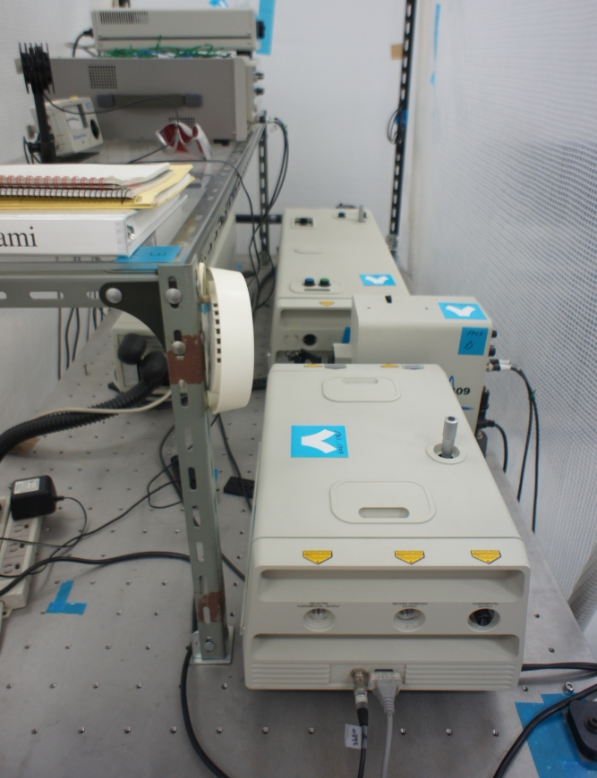Spectra Physics Tsunami 3950 (wavelength 720-850 nm，pulse width 1 ps) used for studying optical properties of solids.
Nanosecond YAG laser and dye laser

Spectra Physics GCR-100 (wavelength 532 nm，pulse width 5 ns) and ELTO LT1233 used for laser-induced fluorescence measurements of atoms in low-pressure plasmas.
Sub-nanosecond nitrogen laser and dye laser

Usho KEN-X (wavelength 337.1 nm, pulse width 700 ps) and home-made dye laser used for laser-induced fluorescence measurements of atoms in atmospheric-pressure plasmas.
Diode lasers
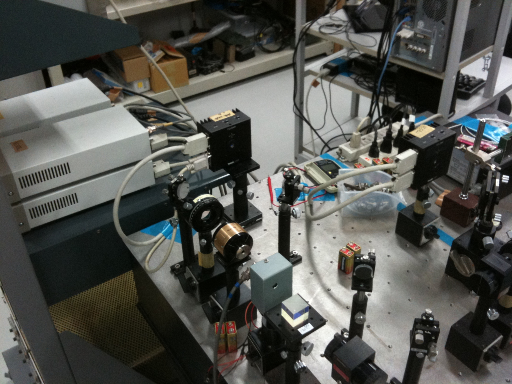TOPTICA DFB with THORLABS temperature and current controllers and ULM Photonics VCSEL with THORLABS temperature and current controllers used for absorption spectroscopy studies of atoms and molecules.
High resolution Czerny-Turner spectrometers
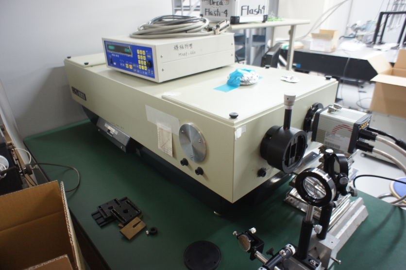Jobin-Yvon Horiba THR1000 (focal length 1 m，grating 2400 lines/mm) and JASCO CT100-CP (focal length 1 m，grating 3600 lines/mm) used for observation of detailed spectral line shapes in plasmas.
Eschelle spectrometer
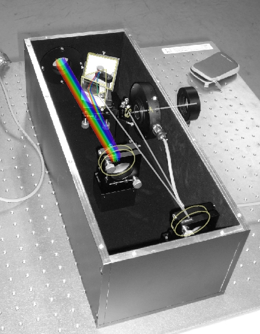Home-made spectrometer (focal length 0.3 m，grating 46.1 lines/mm) used for measurements of wide-band and high resolution spectra.
Ultra-high dynamics range spectrometer
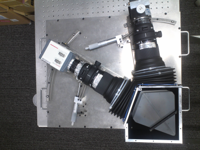Home-made spectrometer（focal length 0.3 m, grating 4000 lines/mm）used for high-resolution and ultra-high dynamic range spectroscopy of hydrogen Balmer-α lines in high-temperature plasmas.
Temperature-controlled glow discharge device
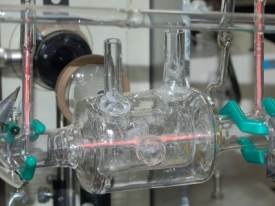Home-made glass discharge tube (low-pressure glow-discharge) used for studies of atomic collision processes in plasmas.
Micro hollow-cathode glow discharge device
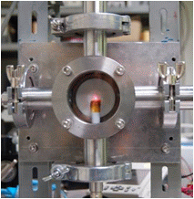Home-made discharge device (atmospheric-pressure glow discharge) used for studies of atomic dynamics in atmospheric-pressure plasmas.
Superconducting magnet and glow discharge device
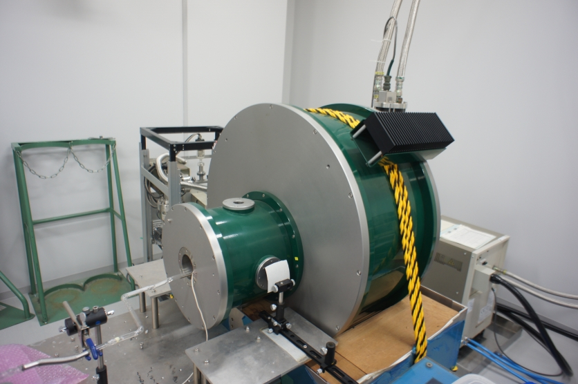Cryogenic 1721 (cryogen-free, up to 7 T) and home-made glass discharge tube (low-pressure glow discharge) used for observation of magnetic field effects on atoms and molecules in plasmas.
ECR discharge device
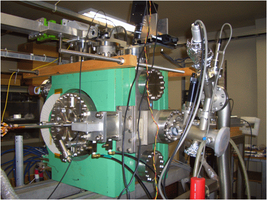2.45 GHz microwave discharge device used for development of a diagnostic system to evaluate electron velocity distribution function anisotropy in plasmas.
Cryostat

Nagase techno-engineering (V24SC6LSCP) used for temperature controlled study of optical properties of solids.
Stirling Engine
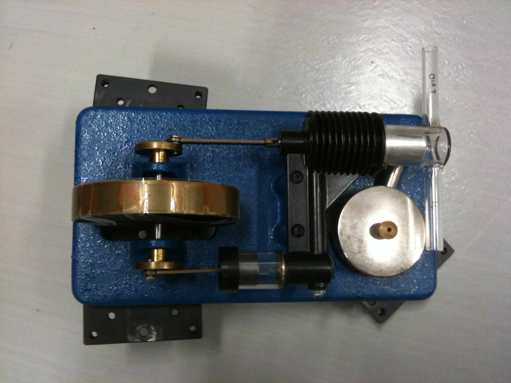Commercial product with home-made glass cylinder used for measurements of oxygen molecular density and temperature in engine cycle.
Thermal lithium atom beam source
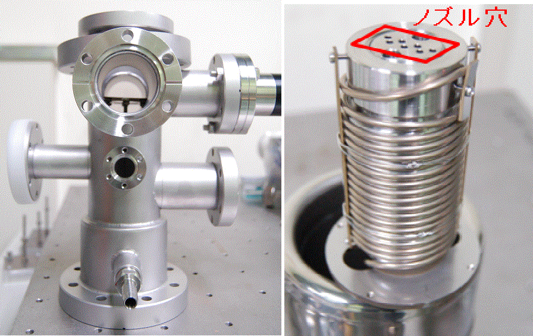Home-made device used for diagnostics of electron velocity distribution function anisotropy in plasmas.